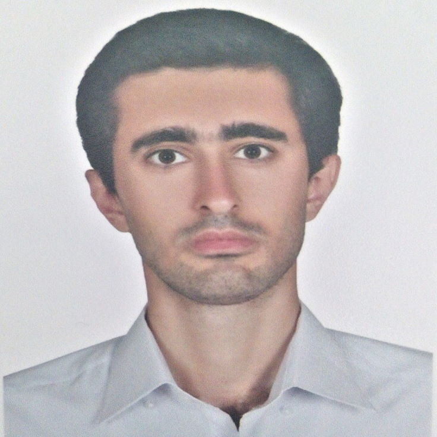

 Born: 1993/12/16 Marital Status: Single Iran - Tehran com.javadabl@gmail.com About Master's degree in computer engineering, software orientation, with skills in application development on the Android platform and software support, and interested in web development on the .NET platform and database management. Educational records Master's degree in computer engineering, software orientation, in payam noor university, center of north tehran. Bachelor of computer engineering; software orientation, in south tehran islamic azad university. Work Experience Software support expert in Military Service, December 1399 - June 1401, Tasks and achievements: Software and operating system support and troubleshooting Network support Hardware support ICDL support Researches Master's thesis: Reducing Android malware threats by modeling the risk domain of applications. Bachelor's Project: Design of tourist virtual space application in Android operating system with Xamarin. Projects Dark Gallery Android App Skills And Interest Native Android Programming Java Kotlin Clean Architecture & MVVM .NET Core HTML CSS Bootstrap ICDL SQL Xamarin FL Studio